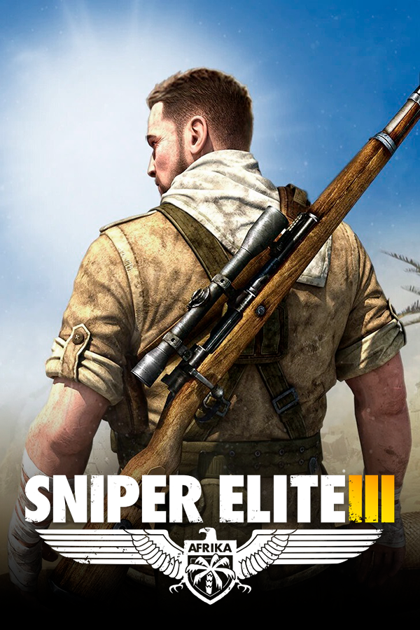

Sniper Elite III
Sniper Elite III
Details
|  | |
| Playtime | Not Played |
| Last Activity | Never |
| Added | 5/7/2025 5:20:51 |
| Modified | 5/7/2025 5:50:54 |
| Completion Status | Not Played |
| Library | Playnite |
| Source | Steam |
| Platform | $PC (Windows) |
| Release Date | 6/27/2014 |
| Community Score | |
| Critic Score | 70 |
| User Score | |
| Genre | FPS Stealth Tactical shooter TPS |
| Developer | Rebellion Developments |
| Publisher | Rebellion Developments |
| Feature | Controller Support Full Controller Support Multiplayer Single Player |
| Links | PCGamingWiki Official site HowLongToBeat IGDB SteamDB StrategyWiki MobyGames Wikipedia WSGF |
| Tag | Action Adventure Africa Asura Atmospheric Co-op Direct control First-Person FPS Gore Historical Multiplayer Online Co-Op Open World Realistic Real-Time Shooter Simulation Singleplayer Sniper Stealth Strategy Tactical Third Person Third-Person Shooter War World War II |
Description
Sniper Elite III is a 2014 third-person tactical shooter stealth video game developed and published by Rebellion Developments. The game is a prequel to its 2012 predecessor Sniper Elite V2, and is the third installment in the Sniper Elite series. A direct sequel, Sniper Elite 4, was released in 2017.
Sniper Elite III is set around three years prior to the events of V2, following the exploits of OSS officer Karl Fairburne as he participates in the North African conflict during World War II, and works to stop the development of a deadly new weapon and eliminate the renegade Nazi commander responsible for it.
Gameplay
The game retains and builds on the mechanics of Sniper Elite V2. Players go through large sandbox-style battlefield maps based on locations from the North African theater of World War II.
The sniper rifle is the player's primary weapon, though additional weapons, including submachine guns and pistols (silenced or not depending on the situation) are available. In addition to hand grenades, the player can deploy tripwire booby traps, two different types of land mines, and dynamite. Binoculars can be used to tag enemies, displaying their position and movements. Small fires can be set to distract enemies or detonate explosives. The player-character can hold their breath while aiming to properly line up a shot. A red icon appears in the scope, marking the projected point of impact. There are weapon parts spread out all over the game or found when looting dead enemies, allowing players to customize their weapons in the pre-deployment menu; the menu also allows equipment loadouts.
Stealth mechanics have been reworked. An eye icon squints or opens to denote the player's level of detection by the enemy. Enemy soldiers will also have a circle meter over their heads to indicate alert status. Players are also forced to relocate periodically to prevent detection with a white ghost image to mark their last known position if spotted; enemy soldiers will search the surrounding area either individually or in groups. As in the previous game, loud sounds may be used to mask sniper shots, however, the player now has the option to sabotage generators as a means of creating noise.
A points system is instituted for actions such as stealth close-combat or using traps to kill enemies, with the points accumulating towards promotion to higher ranks. Players can go around the map to collect special reward items such as collectors' cards and unlock "sniper nests" built into the environment. Journal pages also provide further backstory into the events of the game.
V2's X-Ray kill cam system is retained as well. Where the previous game only allowed the player to see the body's internal structure at point of impact, the new game expands to visualize the rest of the cardiovascular, skeletal, and muscular systems. The player can still target vehicles, but now has a chance to shoot the engines and disable the vehicle, making it easier to destroy.
Multiplayer
Multiplayer in Sniper Elite III consists of five modes of competitive gameplay: Team Deathmatch, Deathmatch, Distance King, No Cross, and Capture the Flag. Similar to the main campaign, there are a large selection of maps to play on with large open environments.
Plot
In June 1942, during the Battle of Gazala, American sniper Karl Fairburne (Tom Clarke-Hill) takes part in an effort by British troops to stop Erwin Rommel and the Afrika Korps from seizing the vital port city of Tobruk. Fairburne eliminates several German artillery positions, but the enemy takes the city and he is forced to abandon his fellow soldiers. Nevertheless, his performance in the battle brings him to the attention of British Naval Intelligence, who recruit him to hunt down General Franz Vahlen, a favorite of Hitler's who is rumored to be working on a top-secret weapon.
Fairburne heads to the Gaberoun oasis in Libya, assassinating several German and Italian officers at a supply and logistics outpost while searching for intel on Vahlen. He only finds a document revealing the name of Vahlen's project: "Project Seuche" (German for "plague"). Naval Intelligence then asks Fairburne to rescue one of their agents, who was captured while gathering information on Vahlen's work. The informant is being held at Fort Rifugio, a POW camp formerly occupied by the British during Operation Compass. The Long Range Desert Group agrees to transport Fairburne in exchange for his help in capturing the German-held Halfaya Pass; Fairburne infiltrates the enemy camp and destroys several Flak 88s.
Fairburne successfully infiltrates Fort Rifugio and frees the informant, Brauer. He gives Fairburne the location of Vahlen's command, a desert village at the Siwa Oasis in Western Egypt. Fairburne, now referred to as the Wüstengeist (Desert Ghost) by the Germans for his exploits, sneaks into the town and finds out that Vahlen's discontented officers plan to betray him, having stolen his personal notebook which reveals his plan to get rid of Rommel. Fairburne kills the officer tasked to take the notebook to Berlin and escapes with Brauer's help. He discovers that Vahlen, hungry for glory and fame, intends to use his new weapon to destroy the Allies in North Africa and then go on to conquer all of Europe.
Fairburne and Brauer locate Vahlen's secret field HQ near the Kasserine Pass and open the general's personal safe, which contains a film reel that reveals "Project Seuche" is a supertank codenamed Ratte. Brauer is subsequently killed by a round from a Tiger I before Fairburne is able to destroy it. He buries Brauer, taking a bullet from his gun. As the Africa Korps begin to lose ground to the Allies, Fairburne joins the LRDG in assaulting the German-controlled Pont du Fahs Airfield, cutting off Vahlen's last supply line and finding a map leading to the Ratte production facility, which is nestled inside the Midès canyon. Fairburne enters the factory, sabotages its electrical supply and plants explosive charges to destroy the Ratte prototype, before detonating a massive pile of ammunition to level the complex. Vahlen is trapped by debris while fleeing the crumbling factory; Fairburne takes his Luger, loads it with Brauer's bullet, and shoots him in the head before escaping.
A voiceover by Fairburne during the end credits reveals that the intelligence he acquired on the Ratte prompted the USAAF and the RAF to launch Operation Chastise and the Battle of the Ruhr, resulting in extensive damage to German heavy industry and forcing the German high command to cancel efforts to build more Ratte tanks.
Release and downloadable content
Sniper Elite III was released worldwide for Microsoft Windows on 27 June 2014. The game was simultaneously released in PAL regions for PlayStation 3, PlayStation 4, Xbox 360, and Xbox One, and in North America on 1 July by 505 Games.
On 21 July 2014, Rebellion Developments announced a new downloadable content (DLC) pack for Sniper Elite III. The DLC pack adds three new missions, one of which the player needs to save Winston Churchill from a German assassination attempt. In the first mission, "In Shadows", Fairburne must uncover the identity of Churchill's would-be assassins. He does this by sneaking back into the Siwa Oasis in Western Egypt which by this point has been won and lost by the Allies since his last visit. In the process, he learns the identity of the assassins and their leader. In the second mission, "Belly of the Beast", Fairburne must infiltrate the assassins' base in the Rif mountains in Morocco. Along the way, he uncovers evidence of a dangerous prototype weapon, the plans that describe how the assassination will be carried out, and where it will take place. During the final mission, "Confrontation", Fairburne must save Churchill from his would-be killers as the Prime Minister heads to the Casablanca Conference. Fairburne must eliminate any and all threats to Churchill including mortars, mines, rocket launchers, tanks, elite German soldiers and a mysterious masked marksman known only as Raubvogel. Other DLCs include new weapon packs. A definitive version of the game containing most of the DLC titled Sniper Elite III Ultimate Edition was released for consoles on 10 March 2015 in North America and on 13 March 2015 in Europe and APAC regions. A version for Nintendo Switch self-published by Rebellion Developments was released worldwide for the Nintendo Switch on 1 October 2019.
In October 2023, the game and all of its downloadable content were delisted from the Microsoft Store.
Reception
Sniper Elite III received "mixed or average" reviews, according to review aggregator Metacritic.
Hardcore Gamer's Matt Whittaker gave the game a 3/5, writing: "Though its stealth-based sniping gameplay can provide some exciting moments, Sniper Elite III is a decidedly mixed bag. Its abysmal narrative, outdated mission design, boring protagonist and weak non-campaign modes overshadow everything that it does well."
Tyler Wilde of PC Gamer criticised graphics ("the character faces are plastic-like") and enemy AI, but praised the player's freedom ("It's a lot of fun to come up with a plan and execute it, and Sniper Elite 3 gives me the freedom and tools to do that"). As far as stealth is concerned, Tyler enjoyed the fact that you can shoot during another sound, thus hiding your position. On the other hand he wrote "there are no surround sound settings, and the audio system is a terrible judge of distance". Finally, he wrote: ”Some of Sniper Elite 3's failures are funny [...] and some of them are frustrating, but its ideas are good and I hope they don't end here. [...] Realistically, I expect we'll have to wait for Sniper Elite 4 for significant improvement" and scored the game a 70/100.
Mikel Reparaz of IGN scored the game an 8.2/10 and wrote: "More than just a showcase for slow-motion gore, Sniper Elite III shines for its open-ended approach to stealth." Reparaz disliked the story, which, according to him, is "awash in clichés and occasionally laughable dialogue", as well as "shaky" artificial intelligence, but spoke positively of the interesting setting, large levels, "immensely satisfying" gore, and multiplayer modes. He also likes the freedom the player has ("how you reach and tackle those objectives is up to you").
Josh Harmon of EGM criticised the plot further ("You go places and shoot bad people, and that’s all you really need to know"), calling the approach to plot "pornographer’s approach to game design". He writes about kill-cam: "The level of variety and detail verges on psychopathic", but "If you get a thrill out of wreaking that sort of anatomical havoc, then Sniper Elite III will offer plenty of excitement".
The EGM reviewer, however, likes sniping. He finds weapons other than rifle badly designed ("The secondary weapons feel weightless, impotent, and inaccurate", "[...] trip mines and dynamite, are aggressively situational to the point of being practically worthless in the wide-open levels"), however he finds stealth using melee attacks and pistol enjoyable.
He sums up: "What we’re left with, then, is a game that revels in split-seconds but struggles to fill the minutes in between." The EGM's review does not concern multiplayer, though.
David Roberts from GamesRadar gave the game a 3 out of 5. He too praised the large environments for allowing strategic play, but felt that the Kill-cam, though a cool feature, "loses appeal fast". Roberts particularly enjoyed the feeling of nailing a perfect shot from a mile away, saying it "never gets old". Roberts' main problems with the game were concerning an "overall lack of polish", and the "flat narrative" and "generic objectives". "Sniper Elite 3 certainly has its share of thrilling moments," Roberts said, "whether you’re hunting blissfully unaware soldiers or being tracked by countersnipers in ghillie suits, but there are too many technical and narrative issues to simply ignore."
Eurogamer's Dan Whitehead wrote in his review: "The package as a whole is still very much a rough diamond, but it's a definite improvement over its predecessor. The gruesome kill-cam remains a deliciously wrong thrill and the unifying force that holds the game together, but it's doubtful that it would be enough to paper over the cracks in a fourth game without a major overhaul of the AI and physics code. Even with its flaws, though, Sniper Elite 3 is a solidly enjoyable mid-tier action game. It may not hit the bullseye, but it's getting closer with every shot." Whitehead gave the game a 7/10.
Game Informer's Tim Turi wrote: "I openly admit that I love gory kills and living the hero sniper fantasy, but Sniper Elite III only partially delivers on the latter. If you can't get enough of dramatic, transparent shots of enemies getting shredded by sniper fire, Sniper Elite III has you covered in spades. If you're interested in more motivation beyond the glory of the kill, look elsewhere." Turi scored the game a 6.5/10 and had mixed feeling about the visuals, sound, Kill-cam, and controls. The GameRevolution reviewer Gil Almogi wrote that kill-cam "was a visual novelty", however "The effect loses its luster after a few times". The reviewer wrote of "satisfying sniping and stealth gameplay", but complained about narrative: "Sniper Elite III, lacking an interesting or commanding narrative to guide Karl Fairburne’s actions, devolves into just a series of missions and objectives". The GameRevolution reviewer praised visuals: "The texture work is excellent, and various environmental effects like windswept sand and sunlight filtering through bushes keep the visuals feeling natural", but complained the player shoots "the same face over and over ad nauseam, regardless of whether he speaks German or Italian", even though the reviewer admitted this is not unique to this game only. The reviewer seemed to enjoy gadgets in the game, especially trip mines.
GameSpot's Josiah Renaudin gave the game a 6/10. Renaudin disliked the balance between sniping (which he admired) and stealth, opining that the stealth is dull and overstays its welcome. Renaudin called the slow-motion kill-camera "devilishly satisfying", and praised the colourful environments for being an improvement over the previous games' instalments. Lastly, even though Renaudin thought the story was "uninspired" and disliked online matchmaking for being "broken", he too praised the level design for encouraging creativity.
Sequels
A sequel, Sniper Elite 4, was released in February 2017 for Microsoft Windows, PlayStation 4 and Xbox One. Sniper Elite 5 and Sniper Elite: Resistance followed in 2022 and 2025 respectively.